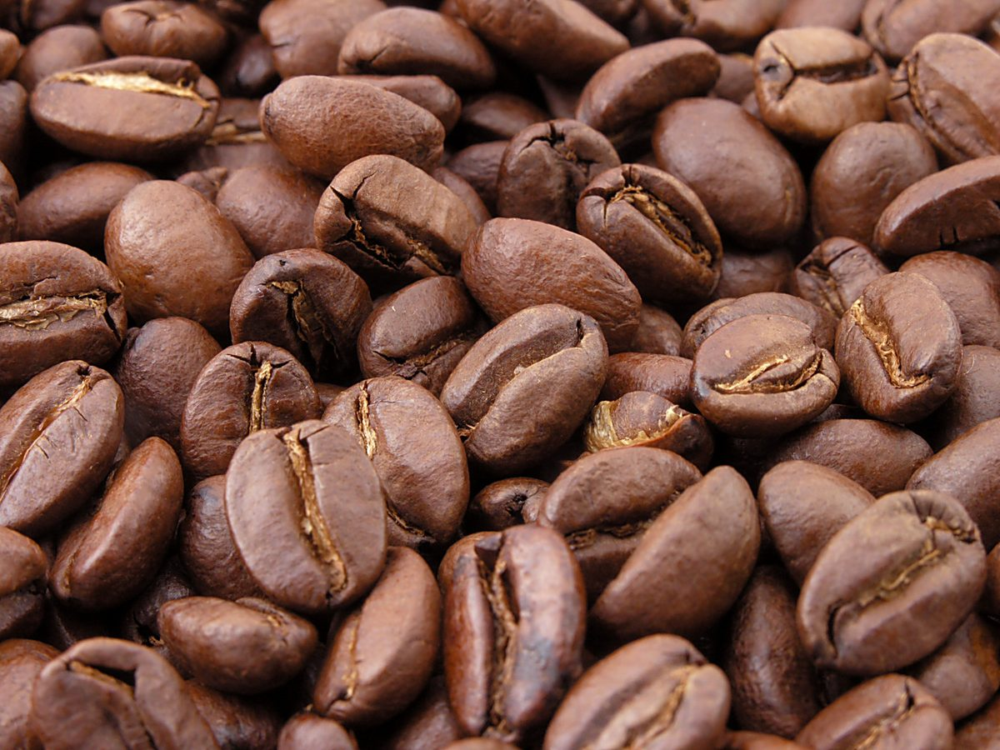
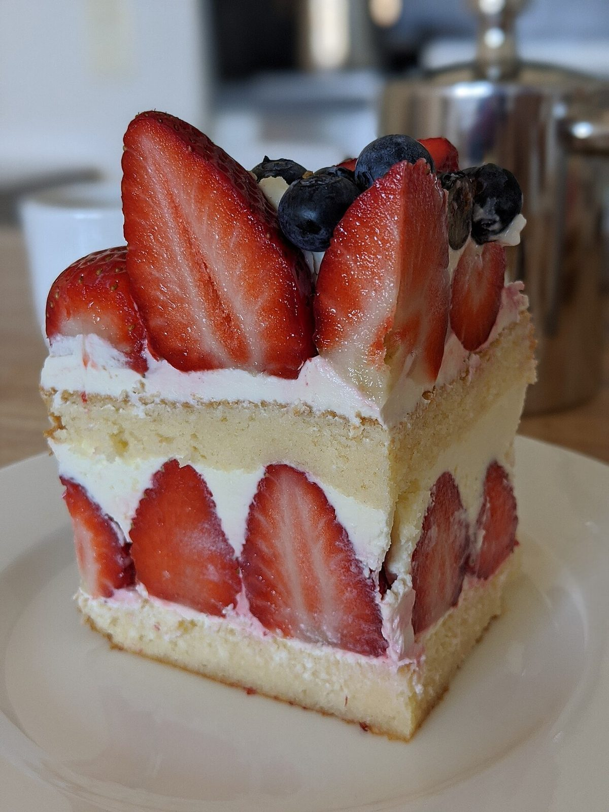
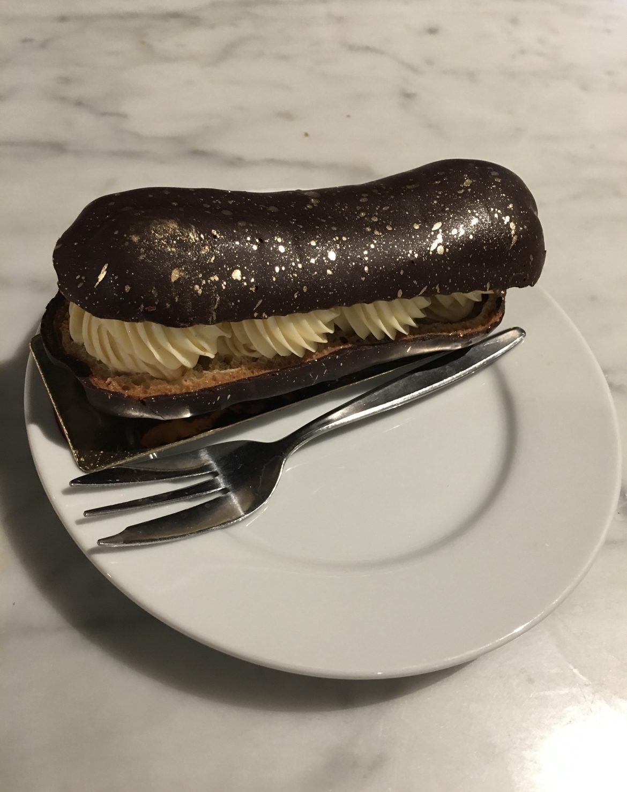
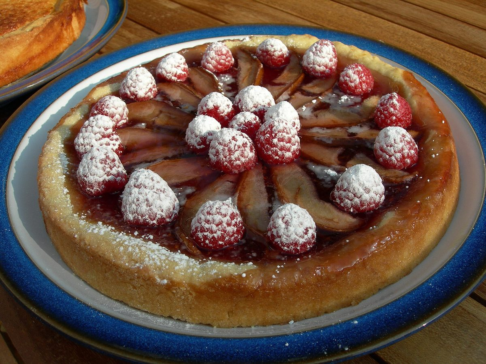

掲載写真はフリー素材のイメージで、店舗の実際の商品・店内ではありません。日本国外で撮影されたもの、撮影地が不明のものを含みます。

メニュー
メニューの内容・価格は準備中(お問い合わせください)。


ケーキ・焼き菓子・ドリンク類については準備中(お問い合わせください)。
掲載中の写真はイメージです。実際の商品とは異なります。




ご予約・ご注文
ご予約・ご注文の方法は準備中(お問い合わせください)。
掲載写真はフリー素材のイメージで、店舗の実際の商品・店内ではありません。日本国外で撮影されたもの、撮影地が不明のものを含みます。

メニューの内容・価格は準備中(お問い合わせください)。


ケーキ・焼き菓子・ドリンク類については準備中(お問い合わせください)。
掲載中の写真はイメージです。実際の商品とは異なります。

ご予約・ご注文の方法は準備中(お問い合わせください)。